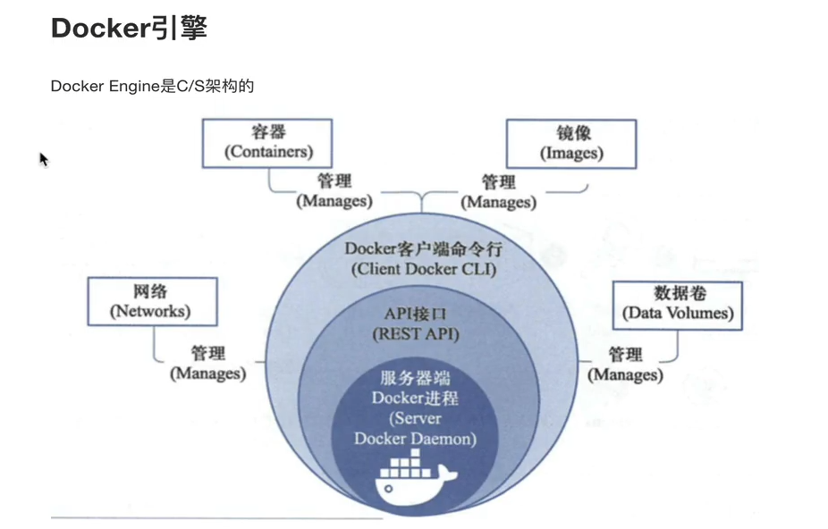
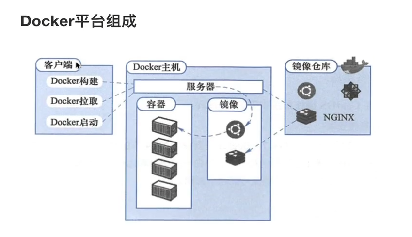
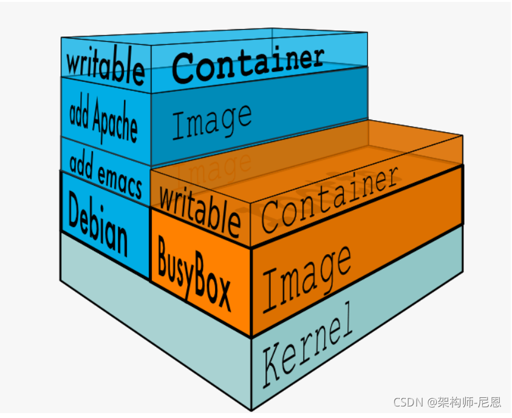

Docker教程
Docker
Docker 容器技术
Docker最初是DotCloud公司在法国期间发起的一个公司内部项目，后来以Apache2.0授权协议开源，代码在Github上维护。
Docker是基于Google公司推出的Golang语言开发而来，基于Linux内核的Cgroups、NameSpace， 以及Union FS等技术，对进程进行封装隔离,属于操作系统层面的虚拟化技术。
由于隔离的进程独立于宿主机和其他隔离的进程，也被称之为容器。
最初的Docker是基于LXC的，后来去除LXC转 而使用自行开发的Libcontainer。
Docker被定义为开源的容器引擎，可以方便的对容器进行管理。例如对镜像打包封装，引入Docker Registry对镜像统一管理。
利用Docker可以实现开发，测试，生产环境的部署一致性， 极大的减少运维成本。
Docker 安装部署


docker最核心的组件
- image镜像 ，构建容器（就是开发程序运行所需的环境，打包成镜像文件）
- Container，容器（应用程序跑在容器中）
- 镜像仓库（dockerhub）（保存镜像文件，提供上传，下载镜像）类似于github
Images
镜像是一个只读模板，用于创建容器，也可以通过Dockerfile文本描述镜像的内容。
镜像的概念类似于编程开发里面向对象的类，从一个基类开始(基础镜像Base Image)
构建容器的过程，就是运行镜像，生成容器实例。
Docker镜像的描述文件是Dockerfile,包含了如下的指令
- FROM定义基础镜像
- MAINTAINER作者
- RUN运行Linux命令
- ADD添加文件/目录
- ENV环境变量
- CMD运行进程
Container
容器是一个镜像的运行实例，镜像>容器。
创建容器的过程
- 获取镜像，如docker pu1l centos ，从镜像仓库拉取
- 使用镜像创建容器
- 分配文件系统，挂载-个读写层，在读写层加载镜像
- 分配网络/网桥接口，创建一个网络接口，让容器和宿主机通信
- 容器获取IP地址
- 执行容器命令，如/bin/bash
- 反馈容器启动结果。
Docker 常用指令
- 查看本地Docker镜像
- docker images
- 下载Docker镜像
- docker pull 镜像名:版本号
- 查看DOcker镜像的信息
- docker info | grep Root
提示 grep 是字符串匹配 只有 Root才被查找出来
- 登录 docker hub(docker仓库)
- docker login hub.docker.com -u - p *
- 制作镜像
- docker bulid -t 镜像名:版本号
- push镜像(push)
- docker push 镜像名:版本号
- 删除镜像
- docker rmi #imagesName#
- 运行容器
- docker run —name 镜像名 -it —rm -p 9080:80 容器名 bash
- docker run -d 容器名
-it 表示开启一个可交互式的终端
—rm 表示关闭镜像时自动删除镜像记录信息
-p 是端口映射将容器内的端口映射到宿主机的对应端口上
bash 表示进入docker后执行的命令
- 进入容器
docker exec -it 容器名 bash
- 查看容器
docker ps
- 删除容器
docker rm 容器名
docker rm 容器ID - Volums 的使用
- 把宿主机的目录映射到docker容器里面，docker里面的程序能够使用宿主机的文件系统，这样docker容器一旦销毁了,数据还会保存在宿主机的文件系统里面
- Volume映射可使用 -v来实现
docker run -it —rm —name 容器名 -v /root/training/nginx/volumes:/usr/share/nginx/share/nginx/html:rw -p 9081:80 容器名:版本号
- docker 端口映射
- 容器里面端口映射到宿主机,让外面能够访问到
- 端口映射可使用 -p、-P来实现
docker run —name 容器名 -it —rm -p 9080:80 容器名:版本号
- 显示docker镜像的id
docker images -q
- 格式化显示镜像
docker images —format “{ {.ID} }—{ {.Repository} }”
- 表格形式显示镜像
‘docker images —format “table { {.ID} } \t { {.Repository} }”
- 批量删除镜像
docker rmi ’docker images -aq‘
- 批量删除容器
docker rm ‘docker ps -aq’
- 提交容器为新镜像
docker commit
- 导出镜像的命令
docker image save 容器名:版本号 > 路径
- 导入镜像的命令
docker image load -i 路径
- 查看docker完整信息
docker image inspect 镜像id
Dockerfile的参数
- FROM
- 功能为指定基础镜像
- 可以通过hub.docker.com去寻找自己需要的基础镜像
- FROM
[:TagName]
- MAINTAINER
- 指定作者
ARG
- 设置变量命令，ARG命令定义了一个变量,在docker build创建镜像的时候,使用 —build -arg
‘
= 来指定参数 路径的填写可以是容器内的绝对路径,也可以是相对于工作目录的相对路径 可以是一个本地文件或者是一个本地压缩文件，还可以是一个url - ARG
[= ]
- 设置变量命令，ARG命令定义了一个变量,在docker build创建镜像的时候,使用 —build -arg
ADD
- 把文件复制到镜像中
- ADD
- 注意:
可以是文件,也可以是一个url,那么ADD就类似于wget命令
- COPY
- 一个复制命令,COPY和ADD的区别在于
只能是本地文件,其他用法一致 - COPY
- 一个复制命令,COPY和ADD的区别在于
- RUN
- 运行指定的命令
- RUN
- 注意:多行命令不要写多个RUN,原因是Dockerfile中每一个指令都会建立一层,可以用&&连接多个命令
- WORKDIR
- 设置工作目录
- WORKDIR</path/to/workdir>
- CMD
- 容器启动时要运行的命令
- CMD
- ENTRYPOINT
- ENTRYPOINT[“executable”,”param1”,”param2”]
- ENV
- 设置环境变量
- ENV
- EXPOSE
- 暴露容器运行时的监听端口给外部,但是EXPOSES并不会使容器访问主机的端口
- 如果想使得容器与主机的端口有映射关系,必须在容器启动的时候加上 -P或者-p参数
- EXPOSE
- VOLUME
- 可实现挂载功能,可以将内地文件夹或者其他容器中的文件夹挂载到这个容器中
- VOLUME[“/dir”]
- USER
- 设置启动容器的用户,可以是用户名或者UID
- USER
提示
docker version 服务端不出现
- 第一步：sudo gpasswd -a username docker #将普通用户username加入到docker组中，username这个字段也可以直接换成$USER。
- 第二步：newgrp docker #更新docker组
- 第三步：再执行你报错的命令，此时就不会报错
Dockerfile的使用
FROM 这个镜像的妈妈是谁? (指定基础镜像)
MAINTAINER 告诉别人,谁负责养它? (指定维护者信息,可以没有)
RUN 你想让它干啥 (在命令前面加上RUN即可)
WORKDIR 我是cd,今天刚化了妆 (设置当前工作目录)
VOLUME 给它一个存放行李的地方(设置卷,挂载主机目录)
容器在运行时，应该保证在存储层不写入任何数据,运行在容器内产生的数据,我们推荐是挂载,写入到宿主机，进行维护
1 | # mount /mnt |
- 容器数据挂载的方式，通过dockerfile,指定VOLUME目录
- 通过docker run -v 参数,直接设置需要映射挂载的目录
EXPOSE 他要打开的门是啥(指定对外的端口)
CMD 奔跑吧,兄弟！ （指定容器启动后的要干的事情）
用法,注意是双引号
CMD[“参数1”,”参数2”]
在指定了entrypoint指定后,用CMD指定的具体参数
docker不是虚拟机,容器就是一个进程,既然是进程,那么程序在启动的时候需要指定些运行参数，这就是CMD指令作用
例:
centos镜像默认的CMD是/bin/bash,直接docker run -it centos会直接进入bash解释器。
也可以启动容器时候,指定参数。 docker run -it centos cat /etc/os-releasea
CMD运行shell命令,也会被转化为shell形式
例:
CMD echo $PATH会被转化为 CMD[“sh”,”-c”,”echo”,”$PATH”]
ADD 给她点创业资金(COPY文件,会自动解压)
1 | 特性和COPY基本一致,不过多了些功能 |
dockerfile其他指令:
COPY 复制文件
1 | #copy指定从宿主机复制文件/目录到新的一层镜像内 |
提示：
Dockerfile官方更为推荐使用COPY,ADD包含了更多复杂的功能,且ADD会使构建缓存失效,导致镜像构建缓慢
ENV 环境变量
1 | ENV NAME="hwx" |
提示：
ARG和ENV一样 设置环境变量
区别在于:
ENV 无论是在镜像构建时,还是容器运行,该变量都可以使用
ARG只是用于构建镜像需要设置的变量,容器运行时就消失了
ENTRYPOINT 容器启动后执行的命令
- 和RUN指令一样,分为两种格式
- exec
- shell
作用和CMD一样，都是在指定容器启动程序以及参数。
当指定了ENTRYPOINT之后,CMD指令的语义就有了变化,而是把CMD的内容当作参数传递给ENTRYPOINT指令。
Dockerfile的底层原理
镜像是多层存储,每一层在前一层的基础上进行修改;
容器也是多层存储,以镜像为基础层,在其基础上加一层作为容器运行时的存储层
- 创建镜像的两个方法
- 手动修改容器内容,然后docker commit 提交容器为新的镜像
- 通过在dockerfile中定义一系列的命令和参数构成的脚本,然后这些命令应用于基础镜像,依次添加层,最后生成一个新的镜像。极大的简化了部署工作。
docker不是虚拟机的概念,虚拟机里的程序运行,基本上都是在后台运行,利用systemctl运行,但是容器内没有后台进程的概念,必须在前台运行。
容器就是为了主进程而存在的,主进程如果退出了,容器也就失去意义，自动退出
例如：
CMD systemctl start nginx
这样的写法是错误的,容器会立即退出
因为systemctl start nginx是希望以守卫进程形式启动nginx,且CMD命令会转化为
CMD[“sh”,”-c”,”systemctl start nginx”]
这样的命令主进程是sh解释器,执行完毕后立即结束了,因此容器也就退出了。
因此正确的做法应该是CMD[“nginx”,”-g”,”daemon off;”]
CONTAINER ID:每个容器的唯一标识符号,自动生成。类似于数据库中的主键
IMAGE: 创建容器使用的镜像名称
COMMAND：运行容器时的命令
CREATED: 容器创建的时间
STATUS：容器的运行状态, Up 8 months指容器已运行8个月
- created(已创建)
- restarting(重启中)
- running(运行中)
- removing(迁移中)
- paused(暂停)
- exited(停止)
- dead(死亡)
- PORTS：容器开放的端口信息
- NAME：容器的别名,在运行容器执行docker run时可使用 —name进行指定
- 